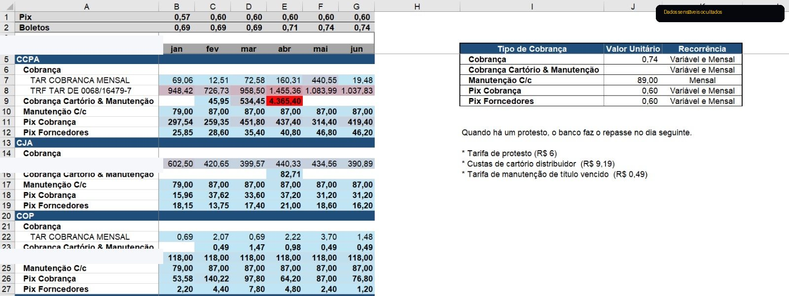

Resumo gerencial
Síntese da análise realizada no Itaú, incluindo boleto, limite especial e estornos identificados.

Custo por movimento
Comparativo mensal por tipo de cobrança, com média e mediana para apoiar a leitura dos principais custos.

Classificação das tarifas
Mapeamento do histórico bancário para uma classificação padronizada e taxação esperada por serviço.

Base classificada
Estruturação das movimentações com data, histórico, valor e classificação para análise recorrente.

Análise por unidades
Visão consolidada por unidade, mês e tipo de tarifa para identificar recorrência, concentração e oportunidades.